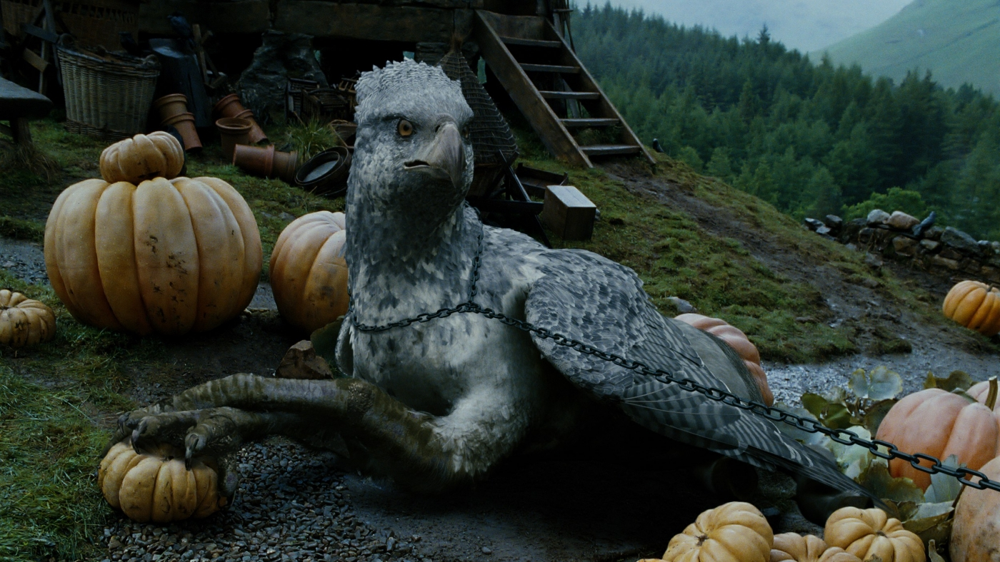
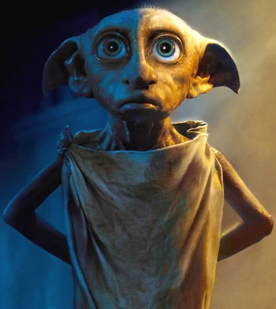
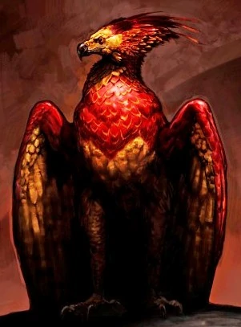

Harry Potter - Hidden gems and insights from a true fan
Magical creatures
Side characters
Buckbeak - Hippogriff

Harry Potter was the first person to ever fly with him. He is so strong, that Sirius
Black, Hermine Granger and Harry Potter flew with him together.
As hippogriffs were immensely proud creatures, Buckbeak was offended when Draco Malfoy
taunted and provoked him. This resulted in him injuring the boy's arm.
Despite his earlier signs of aggression, Buckbeak has been shown to be very loyal and protective of
those who treat him with kindness and respect.
During the Battle of Hogwarts, Buckbeak,
along with several Thestrals, were seen attacking
Lord Voldemort's giant soldiers from the air while Grawp was hitting them.
Buckbeak survived the battle.
Buckbeak also defecated in the film version; it happens right after Ron urges Harry to go up to
Buckbeak. The CGI team believed this was the first time an animal was animated doing this, but
Walking With Dinosaurs did it first in 1999.
In the book of Harry Potter and the Prisoner of Azkaban, Harry doesn't exactly enjoy his
first ride
on Buckbeak, and it's made clear between hippogriffs and broomsticks which one he prefers. However,
in the film adaptation,
during his first ride on Buckbeak, Harry appears to be fascinated by the ride and enjoys it
immensely as they fly over the Black Lake, raising his arms and shouting in triumph.
Buckbeak was intelligent in his ability to recognise his past acquaintances, as he defended a
cornered Harry from Severus Snape in 1997.[7] His loyalty towards Harry was undying, and further
proven when he joined the Battle of Hogwarts in 1998
to fight.
Dobby - a free elf

Dobby was freed by Harry Potter due to a clever trick, as Harry placed a dirty sock of his
in Tom Riddle's Diary, when giving it back to Lucius Malfoy.
Lucius then handed the book to Dobby, who took the sock in the book as a gift, which freed him from
his tie to the Malfoy family.
Dobby tried three things to stop Harry from going back/staying in Hogwarts
Hiding his Mail and dropping a cake on the head of a guests of the Dursleys.
Blocking the barrier, when Harry and Ron tried to get on platform 9 3/4.
Sending a cursed bludger during a quidditch match after Harry, which broke his arm.
Professor Dumbledore offered Dobby ten Galleons a week, and weekends off, but Dobby beat him down.
Dobby likes freedom, miss, but he isn't wanting too much, he likes work better.
When Hermine tried to free more house-elf's from Hogwarts, she started to knit hats and hid them
under trash. What she did not knew, is that Dobby collected all the hats for himself.
Dobby became close friends with Aberforth Dumbledore and spent much time at Aberforth's
home in
Hogsmeade. Aberforth seemed to have a close attachment to Dobby, since he felt very sorry when he
learned he died.
Dobby gave Harry the idea, where they could train with Dumbledore's Army. He knew of this
secret room, because he had used it frequently to hide Winky after she became drunk from Butterbeer.
When Marietta Edgecombe betrayed Dumbledore's Army to Professor Umbridge, Dobby
immediately warned
Harry that the Inquisitorial Squad was going to attack, even though the house-elves had been
forbidden to tell anyone,
but he told Harry as he was far more loyal to him than to Umbridge or Hogwarts in general and also a
free elf that was not forced to obey.
Fawkes - the phoenix

Fawkes was a highly intelligent male phoenix and Albus Dumbledore's animal companion and
defender.
Fawkes had been in Dumbledore's service for 59 years up to the Headmaster's death in 1997.
His tears (which possessed healing properties, as with his species) saved Harry's life after his arm
was punctured by the basilisk's fang and its venom.
Harry's and Lord Voldermort's wand have both a core of Fawkes tail-feathers, which ties
together
their fates.
The first time, Harry Potter encountered Fawkes on his Burning Day. Fawkes appeared very
ill,
decrepit and baleful, and much to Harry's initial shock and horror, burst into flames in front of
his eyes.
When Dumbledore entered, Harry explained to Dumbledore what had just happened to his bird, but
Dumbledore calmly explained to Harry that Fawkes was a phoenix and thus was immortal, and that he
had been looking "dreadful for days".
During Dumbledore's duel against Lord Voldemort in the Ministry of Magic Atrium in 1996, Fawkes
swallowed a
Killing Curse intended for Dumbledore, thus giving Dumbledore time to defend himself against
Voldemort's second oncoming attack.
He burst into flame upon swallowing the curse and was later reborn from the ashes. He was later
returned to Dumbledore's office after Harry Potter was sent there, following his departure
from the
British Ministry of Magic.
Fawkes served as Albus Dumbledore's messenger and his constant companion, forming a close
bond with
the old wizard. Fawkes was also affiliated with Harry Potter and the members of the Order
of the
Phoenix and was the inspiration for its name.
Fawkes is named after Guy Fawkes, since he periodically explodes (in order to be reborn
from the
ashes, like all phoenixes), a joke on the author's part.
The fact that Fawkes, who sacrificed to save Dumbledore's life at the Battle of the Department of
Mysteries, didn't come to his aid at the Battle of the Astronomy Tower hints to the true nature of
the headmaster's death, meaning he was killed by his own orders.